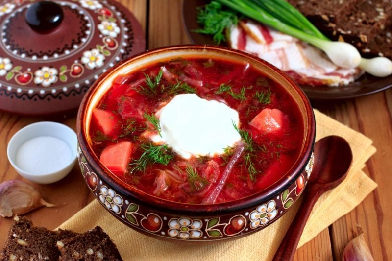

Odin Recipes
Lasagna recipes
Lasagna recipes

Steps
- Make the meat sauce.
- Cook the noodles.
- Make the ricotta mixture.
- Layer the lasagna according to the recipe instructions.
- Cover with foil and bake.
- Let the lasagna rest before serving.
Here u can find more recipes here
Borsh recipes

Steps
- Cook the sousage and set aside
- boil water, add the sausage, then add the vegetables and diced tomatoes
- Cook the onion, stir in the tomato paste, and thin with water. Transfer to the pot.
- Add the garlic, cover, and turn off the heat. ...
- Ladle into bowls and garnish with sour cream and fresh herbs.